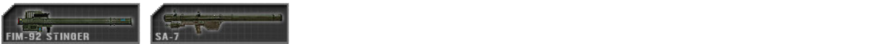

Weapons & equipment
Armas e Equipamentos Gerais
Armas após movimentos prolongados às vezes levam um momento para ganhar precisão e disparar com efetividade em alvos de longo alcance. Engajamentos a distâncias curtas não serão afetados pelo desvio baseado no movimento. Isso permite que os jogadores façam pequenas correções posicionais sem sofrer imprecisão ne mira da arma. A tendência a reduzir significativamente a precisão do jogador por alguns instantes, mas fornece a maior precisão para engajar alvos de longa distância, uma vez que o foco do jogador tenha se recuperado.
A maioria das armas está configurada para disparo semiautomático por padrão.
Armas precisam ser recarregadas manualmente (padrão: R ). O desvio do tiro não é afetado por ter ótica ou miras de ferro equipadas. Armas são classificadas em categorias em PR:BF2, frequentemente conectadas aos kits pelos quais são usadas:

Rifles de assalto geralmente estão disponíveis em diversas variantes com diferentes miras. Mirar com óptica ampliada tem uma vantagem de precisão, mas prejudicada pela visão periférica muito reduzida em comparação com miras reflexas ou miras de ferro.
Kits: Todos os kits que não usam outra arma primária ou estão desarmados

Underbarrel grenade launchers (UGL) Lançadores de granada estão presos ao lado de baixo dos rifles de assalto e são usados contra grupos de inimigos ou indivíduos que não podem ser atingidos por fogo direto. Eles também são eficazes contra veículos não blindados e podem ser usados efetivamente em distâncias maiores que 200m. As granadas precisam viajar 28m antes de se armarem ou não detonarem. Os UGLs também podem disparar granadas de fumaça que são usadas para obscurecer a visão do inimigo. O alcance do lançador pode ser definido usando uma mira estilo uma escada conectada à arma. Ao mirar nesta mira, o menu principal do rádio (padrão: Q) pode ser usado para definir o alcance para a distância do alvo(veja como alterar o alcance da mira). Ao engajar alvos maiores ou menores que as distâncias predefinidas, é importante compensar isso. Nos mapas noturnos, o granadeiro também terá acesso a munições de flare.
Kits: Grenadier

*Armas secundárias são tradicionalmente usadas por líderes de squad de forças convencionais como um backup e um sinal de autoridade. Snipers também são equipados com pistolas para autodefesa durante a mudança de posição. Alguns insurgentes que não têm arma primária usam uma pistola.
Kits: Officer, Sniper, Pilot, Cell Leader, Grenadeiro Vietnam, vários kits insurgent

Shotguns (espingardas) são mortais quando usadas de perto. Elas também podem ser usadas para violar portas e portões trancados. Os civis insurgentes podem ser presos com tiros de shotguns que simulam incapacitar um informante com balas de borracha. A espingarda semi-automática britânica, a L128A1 também pode disparar sabot slugs sólidos que são eficazes em longas distâncias. Algumas espingardas usam balas que só podem ser usadas para violar portas trancadas.
Kits: Rifleman Breacher nas forças convencionais. Vários Insurgentes / Hamas / Taliban / Militia kits

Designated marksman rifles (DMR) ou apenas Marksman são usados para engajar alvos distantes com fogo preciso e efetivo. Eles podem ser montadps em um bipé para aumentar sua precisão ao custo da mobilidade. A postura de um jogador afeta a precisão de longo alcance enquanto o Marksman é montado, e sua posição de disparo ideal é de bruços (deitada). Ao disparar contra alvos até 600m de distância, você é obrigado a compensar a queda de balas. Ainda é vital compensar alvos móveis no alcance. Para maximizar a precisão, o atirador deve esperar cerca de um segundo para outro disparo.
Kits: Marksman

Sniper rifles (Rifles de precisão) são usados para abater alvos de alta prioridade em longas distâncias. Sua taxa de fogo é lenta, uma vez que eles operam usando a ação do ferrolho. A postura do jogador influencia a precisão de longo alcance do rifle sniper. A compensação de queda de bala só é necessária em intervalos superiores a 600m. A precisão máxima é obtida aguardando cerca de 8 segundos após o movimento e 4s após o disparo. A tecla "trocar modo de disparo" (padrão 3) pode ser usada para estabilizar sua respiração, que dura cerca de 8 segundos. Esse som pode ajudar você a estimar o tempo necessário para recuperar a precisão. Manter o botão de disparo pressionado após o disparo permitirá que você visualize a trajetória da bala antes de recarregar o rifle.
Kits: Sniper

Sub machine guns (SMG) ou Sub metralhadoras são usadas em situações de curta distância. Sua taxa de tiro é rápida e elas, principalmente, disparam munição de pistola, como as de 9mm, embora haja exceções para o fato. Algumas metralhadoras caem sob a classificação de arma de defesa pessoal (PDW ), que geralmente têm um comprimento de cano mais curto, dando-lhes maior manobrabilidade e portabilidade. Essas armas podem ser usadas em movimento com pouco ou nenhum desvio de mira, mas são restritas por seu alcance efetivo.
Kits: Crewman, Rifleman AT, Heavy Antitank, Squad leader, Rifleman Breacher em forças convencionais

Light machine guns (LMG) ou Metralhadoras leves são usadas para suprimir o inimigo e podem devastar um esquadrão inimigo quando usado em médio alcance ou em situações de emboscada. Elas podem ser montadas em um bipé para aumentar sua precisão, estabilidade e alcance. Ao usar a LMG montada, a precisão é aumentada, mas somente quando a mobilidade é mínima e não é adequada para uso em dispositivos móveis. A postura do jogador afeta sua precisão de longo alcance, e sua posição de disparo ideal é de bruços. Nesta posição, você obterá a maior precisão em intervalos longos. O modo não montado é usado para quando um jogador está se movendo e precisa retornar o fogo sem demora em intervalos menores.
Kits: Automatic Rifleman
 Medium machine guns (MMG) ou Metralhadoras Médias são uma versão de classe média da metralhadora. Elas usam um calibre maior de 7,62mm que pode ter efeitos devastadores em certas situações e são excelentes para suprimir inimigos a longa distância, subsequentemente eles são limitados a ter apenas um modo de bipé montado e precisam de 10 segundos para configurar e se estabilizar antes de atingirem a precisão do disparo ideal.
Medium machine guns (MMG) ou Metralhadoras Médias são uma versão de classe média da metralhadora. Elas usam um calibre maior de 7,62mm que pode ter efeitos devastadores em certas situações e são excelentes para suprimir inimigos a longa distância, subsequentemente eles são limitados a ter apenas um modo de bipé montado e precisam de 10 segundos para configurar e se estabilizar antes de atingirem a precisão do disparo ideal.
Kits: Machine Gunner
Fragmentation grenades ou granada de fragmentação tem um grande raio de explosão, mas elas não são precisas quando jogadas enquanto se movem ou saltam e seu alcance é relativamente curto. Demora cerca de 5 segundos até que elas detonem. Algumas granadas como as granadas RGO e RKG explodem com o impacto. O RKG também é um exemplo de uma granada destinada ao uso contra veículos. A pedra só causa ferimentos leves ao atingir um jogador, mas vários golpes ainda podem ser letais. Para avisar seus aliados antes de lançar uma granada, você pode usar a tecla de rádio principal (padrão: Q ) enquanto segura a granada para gritar um aviso, ou alternativamente usar o Mumble.
Kits: Granadas: a maioria dos kits de infantaria, especialmente Officers e Riflemans | Pedra: Civil e vários insurgents
 Knifes & Bayonets (Facas e baionetas) são instantaneamente letais se atacarem o inimigo(Abatem o inimigo com apenas uma facada). Os combatentes insurgentes inimigos mortos pela faca contam como uma prisão. Ataques corpo a corpo desarmados levam cerca de 5 acertos para matar um inimigo.
Knifes & Bayonets (Facas e baionetas) são instantaneamente letais se atacarem o inimigo(Abatem o inimigo com apenas uma facada). Os combatentes insurgentes inimigos mortos pela faca contam como uma prisão. Ataques corpo a corpo desarmados levam cerca de 5 acertos para matar um inimigo.
Kits: Corpo a corpo armado: todos exceto o piloto, Civil e Desarmado(nenhum kit equipado) | Corpo a corpo desarmado: Piloto e Desarmado (nenhum kit equipado)

Light anti-tank launchers (LAT) Anti Tank Leve mais conhecido simplesmente por AT são usados contra alvos não blindados e levemente blindados. Eles não são eficazes contra blindagems médias ou pesadas. O operador precisa preparar o lançador (o tubo que dispara a munição anti-tank) parado para acertar o alvo que leva cerca de 4 segundos antes de atingir a precisão de disparo ideal, dependendo de qual lançador específico você está usando, depende de como eles operam. Alguns lançadores são descritos na retícula, outros são ajustáveis, mas geralmente têm precisão de cerca de 500 m. Efetivamente acertar um alvo no alcance requer habilidade e tempo para ser um tiro bem sucedido. O alcance de um lançador pode ser definido usando uma mira de alcance ajustável montada na arma, enquanto aponta para baixo. Para executar esta operação, mantenha pressionado o rádio principal radio menu (padrão: Q ) e selecione a distância entre você e o seu alvo.(veja Alterando a distância de disparo) Ao engajar alvos entre as distâncias definidas, você pode compensar manualmente o ângulo de ataque elevando sua mira ou abaixando-a para manter um ataque efetivo no alvo.
Kits: Rifleman AT, Militia / Taliban / Hamas Anti Tank
 Heavy anti-tank launchers (HAT) Anti-tank Pesado são usados para engajar veículos blindados. Eles podem destruir blindagems leves e médias com um único golpe, enquanto os tanques de batalha principais (MBT) recebem vários golpes para serem destruídos. A eficácia do HAT depende de onde você acertou o MBT. A blindagem de um tanque está mais fraca na parte traseira do veículo e no topo da torre. Por outro lado, o lado mais forte do tanque é a frente. Para preparar a arma para atirar você primeiro tem que ajustar a arma por um período de tempo substancial, em torno de 10 segundos. Para rastrear efetivamente o alvo, você tem que estar em um longo alcance, caso contrário, a arma se torna imprecisa durante o rastreamento. Uma vez que os marcadores da mira se instalam na posição centralizada, você está pronto para disparar. Lançadores específicos são equipados com tele guiados que permite guiar a ogiva diretamente para o alvo. Para rastrear um alvo em movimento, mantenha pressionado o botão de disparo principal até que o míssil dispare e continue rastreando o alvo até o impacto. Alguns HATs não são guiados e disparam diretamente, e alguns não exibem marcadores na mira. Antes de atirar, certifique-se de que o alvo esteja a mais de 30 m de distância de você, caso contrário, a ogiva não armará e não irá detonar.
Heavy anti-tank launchers (HAT) Anti-tank Pesado são usados para engajar veículos blindados. Eles podem destruir blindagems leves e médias com um único golpe, enquanto os tanques de batalha principais (MBT) recebem vários golpes para serem destruídos. A eficácia do HAT depende de onde você acertou o MBT. A blindagem de um tanque está mais fraca na parte traseira do veículo e no topo da torre. Por outro lado, o lado mais forte do tanque é a frente. Para preparar a arma para atirar você primeiro tem que ajustar a arma por um período de tempo substancial, em torno de 10 segundos. Para rastrear efetivamente o alvo, você tem que estar em um longo alcance, caso contrário, a arma se torna imprecisa durante o rastreamento. Uma vez que os marcadores da mira se instalam na posição centralizada, você está pronto para disparar. Lançadores específicos são equipados com tele guiados que permite guiar a ogiva diretamente para o alvo. Para rastrear um alvo em movimento, mantenha pressionado o botão de disparo principal até que o míssil dispare e continue rastreando o alvo até o impacto. Alguns HATs não são guiados e disparam diretamente, e alguns não exibem marcadores na mira. Antes de atirar, certifique-se de que o alvo esteja a mais de 30 m de distância de você, caso contrário, a ogiva não armará e não irá detonar.
Kits: HATs das forças convencionais

Surface-to-air missiles (SAM) ou mísseis antiaéreos (algumas pessoas utilizam a sigla AA e ManPad) são usados para derrubar aeronaves inimigas. Para conseguir isso, você precisa adquirir visualmente o alvo rastreando-o com a mira da SAM. Uma vez que o rastreamento esteja estabelecido, você ouvirá um tom baixo; após alguns segundos, quando a trava for alcançada, você ouvirá um tom alto secundário, neste ponto, você poderá disparar. Contramedidas como flares impedem que você destrua efetivamente seu alvo, de modo que seu ângulo de ataque em relação à direção de movimento do veículo é fundamental para atingir um alvo. Os pilotos inimigos receberão um som de aviso alguns segundos depois de terem sido bloqueados por um SAM, dando-lhes tempo para se afastarem da ameaça. Algumas facções mais antigas, como as facções das Malvinas com o Blowpipe, não terão armas AA de rastreio automático e precisarão ser guiadas manualmente.
Kits: Anti Aircraft

Remote detonated explosives ou explosivos detonados remotamente são explosivos que são detonados por um dispositivo remoto acionado pelo indivíduo que colocou os explosivos e são geralmente usados para emboscadas e defesa. Minas Antipessoal (Claymores ) leva 5 segundos para armar após a colocação. Ao armar o detonador, um som indicará quando este tempo passou. Se os explosivos forem acionados prematuramente, eles não explodirão de jeito nenhum. IEDs não têm essa salvaguarda. A maioria dos explosivos tem que ser montada na posição de bruços/(deitada). Um jogador pode colocar até 4 minas AP e 5 C4 packs ou IEDs simultaneamente. Alguns soldados podem colocar dois grupos independentes de explosivos que podem ser acionados individualmente. Esses explosivos podem ser todos retirados pela chave inglesa do Combat Engineer. Durante a colocação, você pode colocar uma marca no mapa para forças aliadas pressionando Q. Você pode colocar até 3 marcas no total.
Kits: Minas AP: Rifleman AP | Mina, Morteiro, IEDs de TNT: Sapper | Recipiente de água IED: Sapper e Engineer de forças não convencionais

Time detonated explosives ou Explosivos detonados por tempo são explosivos em um temporizador que detonam logo após terem sido colocados e são usados principalmente para remover construções fixas, como FOBs inimigas, depósitos de munição e veículos inimigos abandonados. Os dois principais tipos de explosivos cronometrados são as cargas Large e Small C4 (grande e pequena). O C4 Grande é um pouco mais que o dobro do tamanho do Small C4 e está disponível apenas para o Kit de Combat Engineer das Forças Convencionais, enquanto o Small C4 é carregado pelos kits de Combat Engineer das Forças Convencionais e Breacher. Você só precisa colocar uma carga de C4s grandes ou pequenas para destruir uma FOB, mas uma única carga C4 pequena não destruirá uma Super Fob imediatamente. Em vez disso, a Super Fob desmoronará alguns segundos após a detonação da carga, o tempo da equipe adversária para reparar o FOB. Para destruir a fundação (base de areia da Construção) de um FOB ou outra construção implantável, simplesmente coloque outra carga C4 pequena na fundação e ela será destruída logo após a detonação. O Small C4 também pode ser usado para destruir veículos parados, com 1x Small C4 para destruir veículos blindados leves (Land Rovers, Carros Civis, Technicals, HMMWVs levemente blindados, etc. ), 2x C4s Pequenos para destruir Jeeps Blindados e caminhões (Up-Armored HMMWV, Panther CLV e Support & Logistics Trucks, como o M-35, etc. ), 3x C4s pequenos para abater os APCs. O Large C4 pode ser defusado pela Chave Inglesa / Engrenagem do Combat Engineer.
Kits: Small C4: Combat Engineer e Breacher de Forças convencionais | Large C4: Combat Engineer de forças convencionais
Mines ou Minas são explosivos de contato aos quais o kit de Combat Engineer têm acesso. Estes podem ser jogados em qualquer parte do Mapa e ficarão visíveis. Durante a colocação, você pode colocar uma marca no mapa para forças aliadas pressionando Q. Você pode colocar até 3 marcas no total. Minas podem ser removidas com a chave de um Combat Engineer.
Kits: Combat engineer

Field dressings ou Curativos restauraram 25% de saúde. Eles são jogados no chão para curar o jogador mais próximo do curativo. Os curativos de campo são selecionados pressionando a tecla 8 ou 9. O kit de primeiros socorros pode curar completamente um jogador e é usado mantendo o botão esquerdo pressionado enquanto aponta para a pessoa a ser curada. Os kits de primeiros socorros não são mais descartados e levam algum tempo para curar completamente um jogador muito machucado. Um médico pode curar-se usando os curativos fornecidos. Os jogadores dentro de um veículo com um médico curarão automaticamente ao longo do tempo. O epipen é então usado para reanimá-los. Soldados recém-revividos precisam de tratamento médico imediato para evitar sangramento. Arrastar é usado para mover um jogador ferido antes de aplicar uma injeção de epinefrina. Você precisa estar agachado antes de poder usar isso.
Kits: Field Dressing: todos os soldados | Kit de primeiros socorros, Drag, Epipen: Combat Medic / Corpsman / Insurgent Medic

Extra Ammunition ou Bolsa de munição pode ser usada quando um jogador está ficando sem munição. Uma única bolsa de munição geralmente fornece alguns pentes e uma granada ou duas. A bolsa de munição também pode ser usada para rearmar armas implantáveis como MGs, Armas Anti-tank e posicionamentos de morteiros.
Kits: Rifleman e vários kits insurgents

Entrenchment tool ou Pá é usada para construir estruturas implantáveis para a equipe. Não pode ser usada ofensivamente. Para construir uma estrutura, você precisa apontar para ela e segurar o botão esquerdo do mouse até que a animação de escavação pare. A opção alternada de radio permite que os líderes de esquadra destruam trincheiras amigas e blocos de estradas de arame farpado.
The Wrench/Repair Kit é usado para desarmar e remover explosivos, como minas terrestres, IEDs, flares de trip e armadilhas de granadas. Ele também pode fornecer reparos para veículos leves específicos quando eles sofreram danos. Também pode ser usado para construir arame farpado. Tanto a pá quanto a chave são capazes de consertar um cache.
Kits: Pá: todos exceto officer, Combat Medic / Corpsman, Sniper, Pilot, Cell leader e Civil do Hamas
Chave inglesa: Combat Engineer de forças convencionais

Smoke Grenades ou granadas de fumaça são usadas para esconder o movimento de tropas ou sinalizar para aeronaves aliadas. Uma granada de fumaça geralmente leva cerca de 30 segundos para aumentar e preencher. A cortina dura mais de um minuto antes de se dissipar.
_Kits: Granada de fumaça: a maioria dos kits | Granada de Fumaça de sinalização: Officer, Sniper e piloto de forças convencionais

Binoculars ou Binóculos permite que os soldados avistem inimigos distantes e identifiquem contatos desconhecidos. Officers e líderes de esquadrões também podem usar seus binóculos para solicitar ataques de morteiros. O designador de alvo de laser em terra (GTLD) é usado para marcar alvos para engajamento de aeronaves e morteiros aliados.
Kits: Binóculos: Crewman, Sniper e a maioria dos kits de forças não convencionais | GTLD: Officer e Spotter de forças convencionais
 Radios e telefones são usados para denunciar contatos hostis ao resto da equipe. Eles também podem ser usados pelos líderes do esquadrão para solicitar apoio de outras unidades e para colocar estruturas implantáveis.
Radios e telefones são usados para denunciar contatos hostis ao resto da equipe. Eles também podem ser usados pelos líderes do esquadrão para solicitar apoio de outras unidades e para colocar estruturas implantáveis.
Kits: Officer, Cell Leader, Spotter, Civil
 The Grappling Hook ou Gancho também conhecido como corda é usado para atravessar paredes, edifícios ou para obter acesso ao topo das estruturas para permitir que o membro principal do esquadrão tenha a vantagem do alto. Depois que o gancho se conectou com sucesso a uma superfície, qualquer jogador pode subir a corda pressionando a tecla "enter / exit" (padrão: E ) e avançando para subir e descer a corda. Eles permanecem na posição por 3 minutos e podem ser recuperados pelo jogador usando a tecla do kit de coleta (padrão: G ).
The Grappling Hook ou Gancho também conhecido como corda é usado para atravessar paredes, edifícios ou para obter acesso ao topo das estruturas para permitir que o membro principal do esquadrão tenha a vantagem do alto. Depois que o gancho se conectou com sucesso a uma superfície, qualquer jogador pode subir a corda pressionando a tecla "enter / exit" (padrão: E ) e avançando para subir e descer a corda. Eles permanecem na posição por 3 minutos e podem ser recuperados pelo jogador usando a tecla do kit de coleta (padrão: G ).
Kits: Breacher, Scout, Civil
Parachutes (Paraquedas) são usados por pilotos e pára-quedistas. Eles são abertos automaticamente quando spawnam em um esquadrão aéreo transportado. Ao ejetar de uma aeronave de asa fixa, o assento ejetável também acionará automaticamente o paraquedas. Ele também pode ser aberto manualmente em outros casos com a tecla 9. Os paraquedas precisam ser abertos tempo o bastante antes de atingir o solo para evitar ferimentos ou um leve caso de morte. Depois que seu líder de esquadrão alcançou o solo em um mapa de apoio para paraquedistas, uma caixa de suprimentos especial aparece ao lado dele. Esta caixa só pode ser usada para solicitar kits.
Kits: Pilot, qualquer kit padrão usado por um esquadrão com um ponto de spawn aéreo
Utilizando Mira de Ferro (BUIS)
Back up iron sights (BUIS) ou mira de ferro de backup são projetados para fornecer ao operador um método alternativo para o engajamento de um alvo, dependendo da situação. Contanto que a arma tenha o BUIS equipado, o jogador poderá alternar entre miras de backup e ótica usando a tecla Cycle Camera Padrão (C). O jogador pode alternar entre os modos de visualização, indicados pela letra BUIS no canto inferior direito. S para escope, B para Backup. O modo BUIS pode ser alternado a qualquer momento, esteja você mirando ou não a arma.